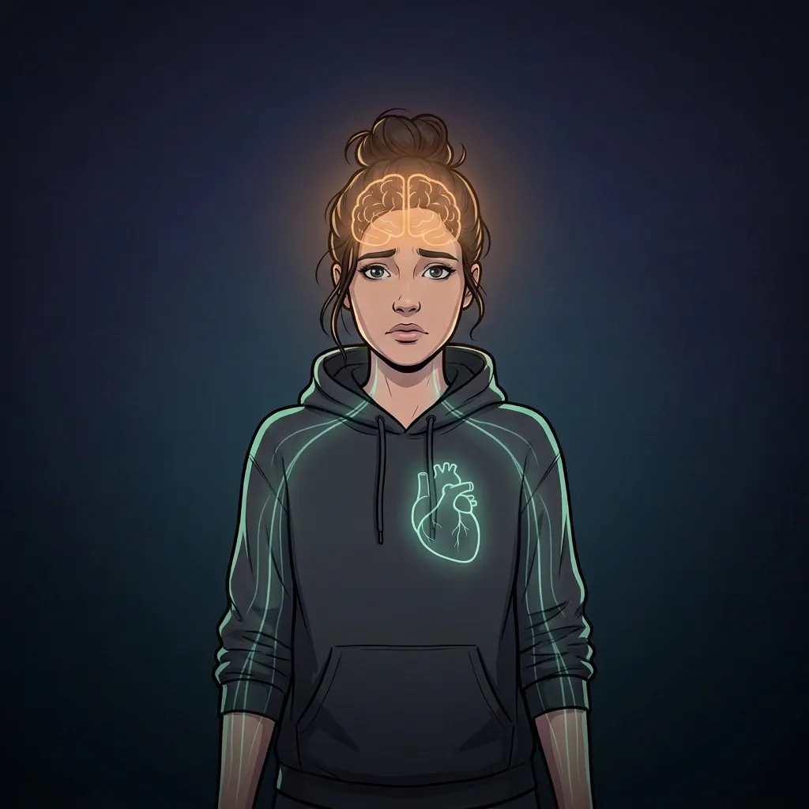
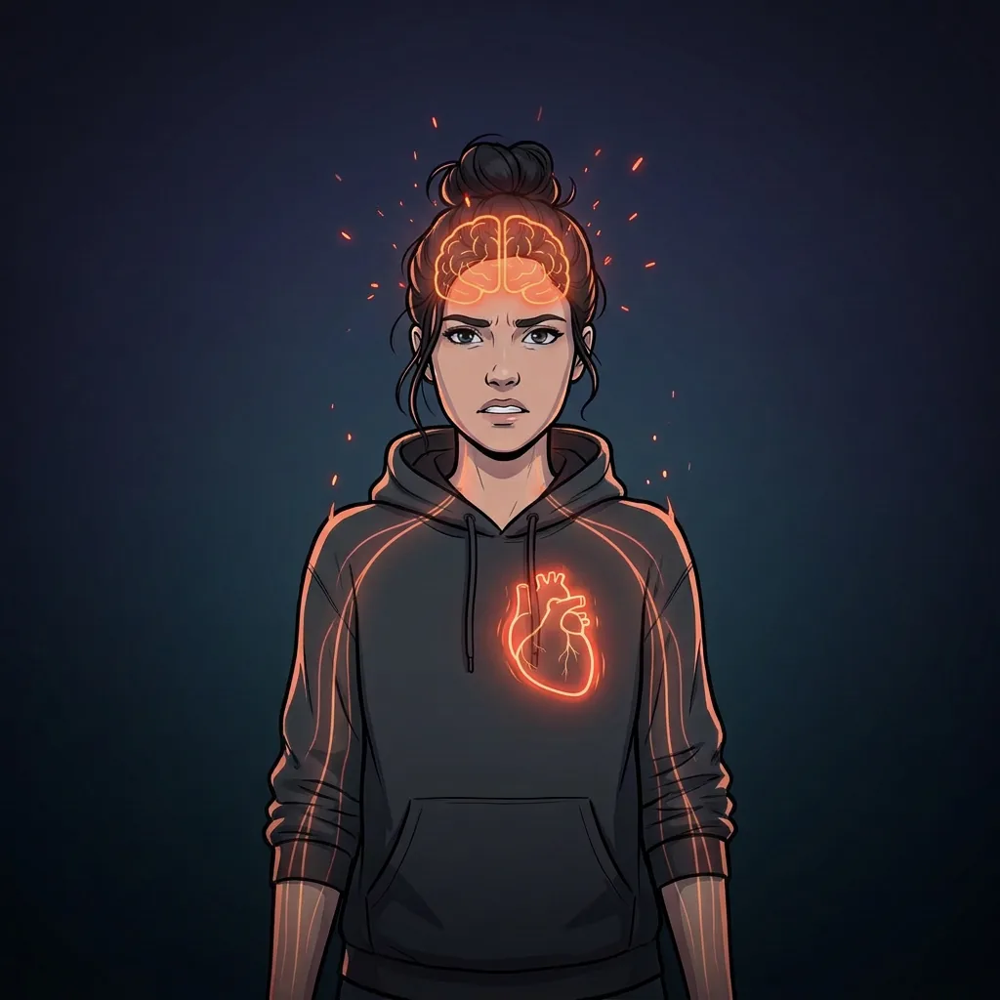
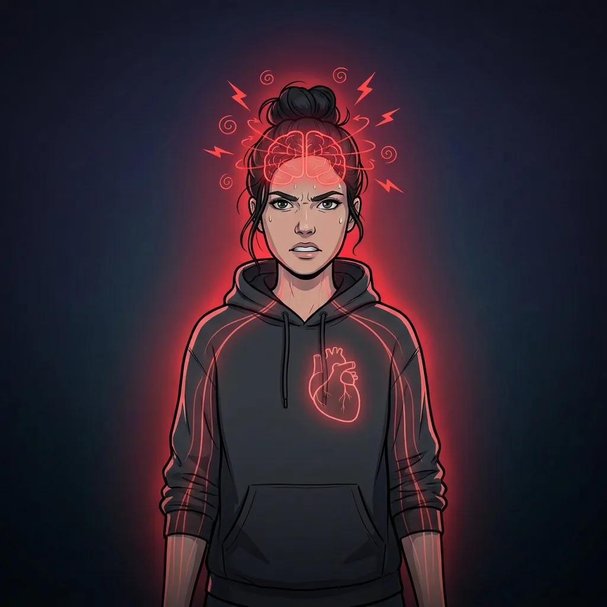
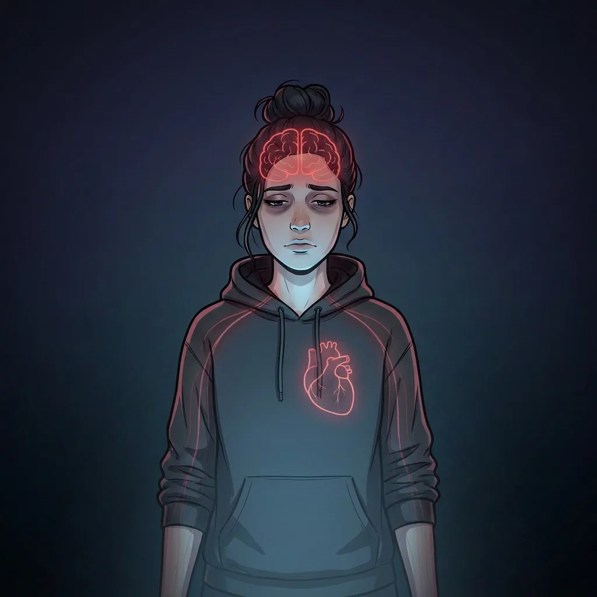
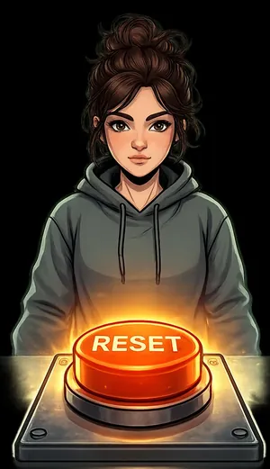

Mini-Reset (3-2-1)
Stopp das Abdriften. Komm zurück ins Hier und Jetzt.
Bewusster Fokus
Entscheide, worauf du deine Aufmerksamkeit richtest.
Anfangs brauchst du den Mini-Reset bewusst. Später läuft auch die neue Richtung auf Autopilot.
Wenn die neuen Gedanken zu Autobahnen werden, läuft dieser Kreislauf von selbst – für dich, nicht gegen dich.
Das heißt nicht, dass du nur Negatives konsumierst. Aber wegen des Negativity Bias rutschst du leichter in den Teufelskreis.
Klarkommen – Das Update, das dir fehlt